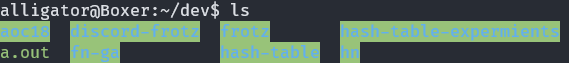

A PSA for anyone who runs ls and is greeted with this legibility nightmare:

According to dircolors, the green background represents a directory that is other-writable:
$ dircolors -p | grep ";42"
STICKY_OTHER_WRITABLE 30;42 # dir that is sticky and other-writable (+t,o+w)
OTHER_WRITABLE 35;42 # dir that is other-writable (o+w) and not sticky
42, as part of an ANSI escape sequence, gives you a green background.
Luckily it's easy to change by appending some commands to the end of the LS_COLORS environment variable. Here's how I'm doing that in my bashrc:
export LS_COLORS="${LS_COLORS}tw=01;34:ow=01;34:
This sets the tw (STICKY_OTHER_WRITABLE) and ow (OTHER_WRITABLE) colors to the same as a regular directory; blue foreground with no background.
Also if you're curious, I tracked down the patch where those colours were introduced.